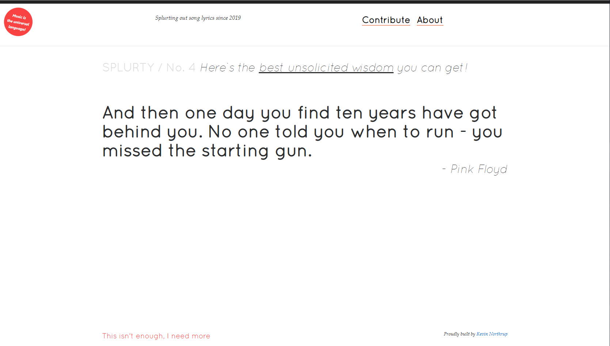
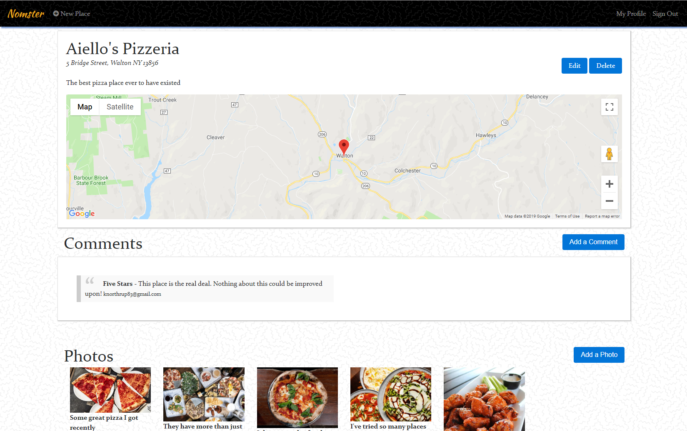
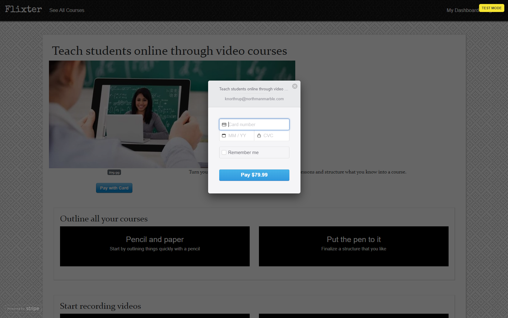
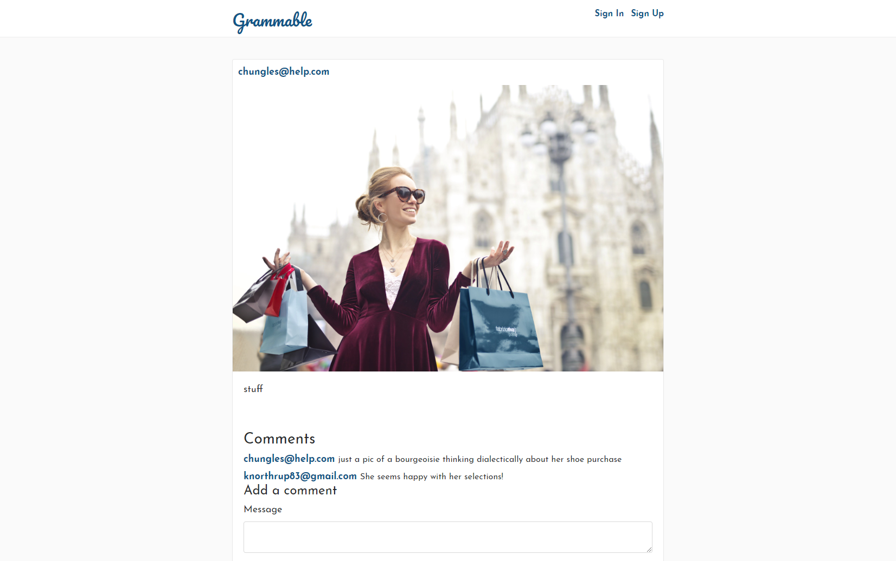
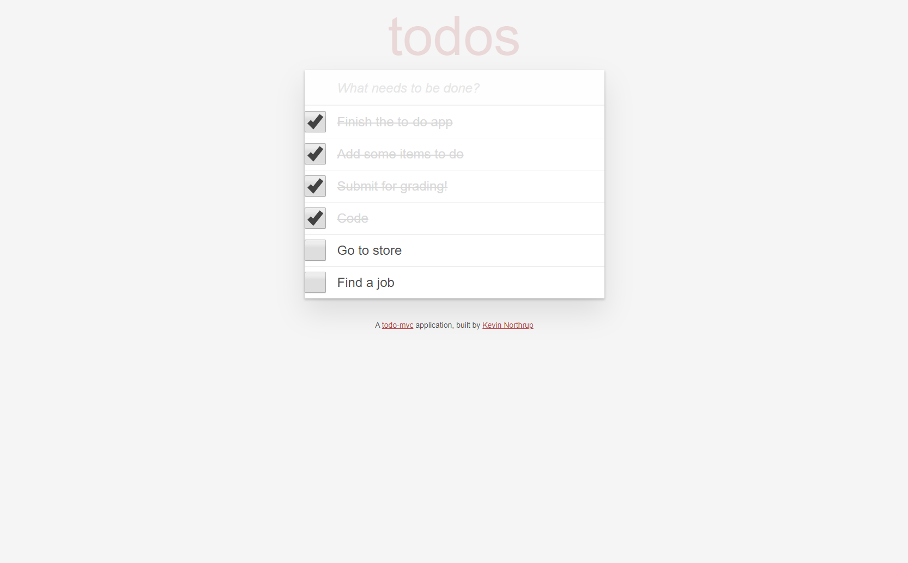
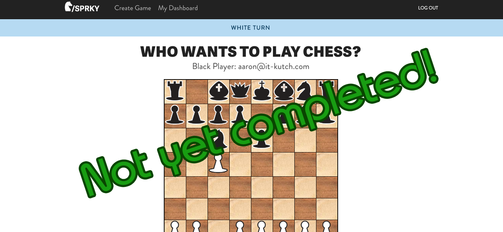

Temperature Conversion
This Ruby program will prompt the user for a temperature
in degrees Celsius and let the user know what the
corresponding temperature is in Fahrenheit.
def converter(n)
temp = n.to_f
return ((temp - 32) * 5 / 9)
end
puts "Enter a temperature in Fahrenheit:"
temp_f = gets.chomp
temp_c = converter(temp_f)
puts "That is #{temp_c} degrees Celsius!"
puts "Enter a number."
number = gets.chomp.to_i
rightmost = number % 10
if rightmost == 1 && number != 11
ordinal = number.to_s + "st"
elsif rightmost == 2 && number != 12
ordinal = number.to_s + "nd"
elsif rightmost == 3 && number != 13
ordinal = number.to_s + "rd"
else
ordinal = number.to_s + "th"
end
puts "That's the #{ordinal} item!"
Ordinal Challenge
This Ruby program will convert a plain number
to the ordinal of the number. So for example,
if the user enters 2, it will display 2nd, if
the user enters 3, it will display 3rd, etc.
Foobar
This Ruby program is an adaptation of a classic technical
interview problem which displays sequences
of the Foobar pattern.
def foobar(items)
n = 1
list = []
while n <= items
if (n % 3 == 0 && n % 5 == 0)
list.push("Foobar")
elsif (n % 3 == 0 && n % 5 != 0)
list.push("Foo")
elsif (n % 3 != 0 && n % 5 == 0)
list.push("Bar")
else
list.push(n)
end
n = n + 1
end
return list
end
puts "How many items do you want to see?"
items = gets.chomp.to_i
list = foobar(items)
puts "--------RESULT--------"
puts list
Web Apps
Quote Generator

A database-powered quote generator with a mobile-first design, using the Ruby on Rails framework, HTML, and CSS. Uses Git and GitHub for version control, and launched on Heroku.
Yelp Clone

A Yelp clone that integrates with the Google Maps API
and includes features like user comments, star ratings,
image uploading, and user authentication.
Two-Sided Market Place

A two-sided, video-streaming marketplace platform that
features credit card payment capabilities, user role
management, complex user interfaces, and advanced
database relationships.
Test Driven Development

An Instagram clone that was built using industry-standard, test-driven
development following numerous red/green/refactor cycles.
Single Page Todo Application

This single-page to-do application features a
fluid user interface that– by using JavaScript–
allows users to rapidly add dynamic content.
Agile Team Project

Worked on an Agile software development team building
a chess application. Under the guidance of a senior software engineer,
we had weekly Agile team meetings for code reviews, sprint planning,
and feature assignments.